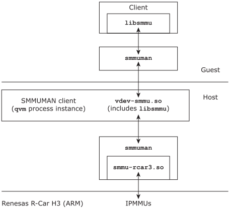

SMMUMAN can be used in a QNX guest running in a QNX hypervisor VM.
QNX hypervisor(with a small h) to refer to either the non-safety product QNX Hypervisor or the safety-certified product QNX Hypervisor for Safety. When necessary, we refer to a specific hypervisor product using its exact name with the appropriate capitalization (with a large h).
No smmu-*.so library is required for a SMMUMAN running in a guest
in a QNX hypervisor VM, as shown in the figure below. The vdev-smmu
virtual device in the VM provides the required subset of the
smmu-*.so library functionality needed by a SMMUMAN running
in a guest (see The vdev-smmu virtual device
).

The figure above shows the SMMUMAN running in a QNX guest in a QNX hypervisor VM, as well as running in the hypervisor host. Note that as far as the SMMUMAN in the host is concerned, the qvm process instance is simply a client like any other.
The vdev-smmu.so virtual device shared object is a QNX
hypervisor component. It must be loaded into the hypervisor host to enable the
smmuman service in a guest. For more
information about vdev-smmu and how to use it, see SMMUMAN in a QNX hypervisor system
and Mapping DMA devices and memory regions through the API
, and the QNX
Hypervisor User's Guide.
To run the smmuman service, a guest running in a QNX hypervisor VM on ARM platforms must load libfdt.so. Make sure you include this shared object in the guest's buildfile.